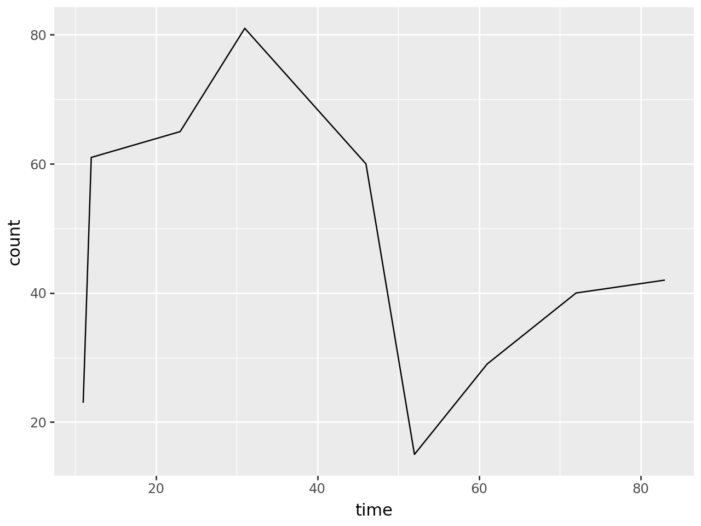
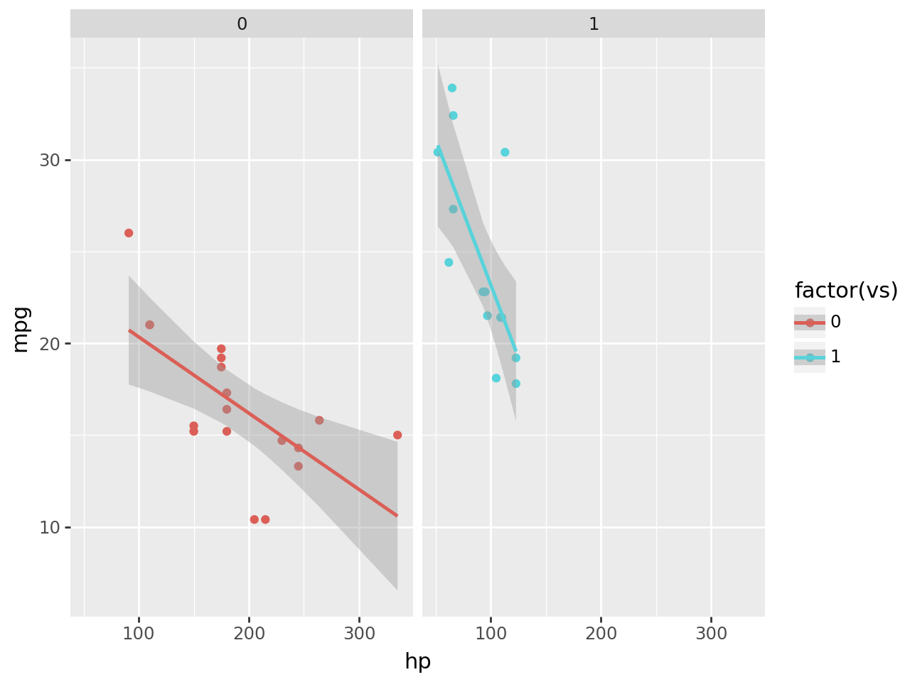

pip install plotnine55 Other Plotting Libraries
55.1 Plotnine
If you’ve come from R and made use of the ggplot library, you might like plotnine!
This library makes use of the grammar of graphics to build graphs up in steps.
Tip
In your own environment on your local machine, you will need to run
from plotnine import ggplot, geom_line, aes
from plotnine.data import mtcars
import pandas as pd
data = pd.DataFrame()
data["time"] = [11,12,23,31,46,52,61,72,83]
data["count"] = [23,61,65,81,60,15,29,40,42]
(
ggplot(data, aes("time", "count"))
+ geom_line()
)
Plotnine makes it easy to split data over multiple plots by a category.
This example shows a plot of the numbers of miles per gallon achieved by cars with a different number of horsepower, split by flat engines (0) and v-shaped engines (1).
from plotnine.data import mtcars
mtcars.head()| name | mpg | cyl | disp | hp | drat | wt | qsec | vs | am | gear | carb | |
|---|---|---|---|---|---|---|---|---|---|---|---|---|
| 0 | Mazda RX4 | 21.0 | 6 | 160.0 | 110 | 3.90 | 2.620 | 16.46 | 0 | 1 | 4 | 4 |
| 1 | Mazda RX4 Wag | 21.0 | 6 | 160.0 | 110 | 3.90 | 2.875 | 17.02 | 0 | 1 | 4 | 4 |
| 2 | Datsun 710 | 22.8 | 4 | 108.0 | 93 | 3.85 | 2.320 | 18.61 | 1 | 1 | 4 | 1 |
| 3 | Hornet 4 Drive | 21.4 | 6 | 258.0 | 110 | 3.08 | 3.215 | 19.44 | 1 | 0 | 3 | 1 |
| 4 | Hornet Sportabout | 18.7 | 8 | 360.0 | 175 | 3.15 | 3.440 | 17.02 | 0 | 0 | 3 | 2 |
from plotnine import ggplot, geom_point, aes, stat_smooth, facet_wrap
(
ggplot(mtcars, aes("hp", "mpg", color="factor(vs)"))
+ geom_point()
+ stat_smooth(method="lm")
+ facet_wrap("vs")
)
You can read more about the package, and see more code examples, here.
55.2 Plotly
Plotly is a very powerful library for creating interactive graphs.
There are several different ways to create plotly graphs, with the more complex methods giving you more control over the end product.
However, the plotly.express module is a great place to start.
import pandas as pd
import plotly.express as px
data = pd.DataFrame()
data["time"] = [11,12,23,31,46,52,61,72,83]
data["count"] = [23,61,65,81,60,15,29,40,42]
data.head()| time | count | |
|---|---|---|
| 0 | 11 | 23 |
| 1 | 12 | 61 |
| 2 | 23 | 65 |
| 3 | 31 | 81 |
| 4 | 46 | 60 |
px.line(data, x="time", y="count")55.2.1 Bar Chart
data = pd.DataFrame()
data["hsma_trainers"] = ["Dan", "Sammi", "Amy"]
data["hours_of_teaching"] = [96, 54, 6]
data| hsma_trainers | hours_of_teaching | |
|---|---|---|
| 0 | Dan | 96 |
| 1 | Sammi | 54 |
| 2 | Amy | 6 |
px.bar(data, x="hsma_trainers", y="hours_of_teaching")55.2.2 Scatter Plot
data = pd.DataFrame()
data["a"] = [11,52,61,72,83,12,23,31,46]
data["b"] = [23,61,65,81,60,15,29,40,42]
data| a | b | |
|---|---|---|
| 0 | 11 | 23 |
| 1 | 52 | 61 |
| 2 | 61 | 65 |
| 3 | 72 | 81 |
| 4 | 83 | 60 |
| 5 | 12 | 15 |
| 6 | 23 | 29 |
| 7 | 31 | 40 |
| 8 | 46 | 42 |
px.scatter(data, x="a", y="b")55.3 Seaborn
Seaborn builds on matplotlib. It’s good at creating many kinds of visualisations, but does things a little differently to matplotlib.
You can take a look at its documentation to see if you like the way it’s written.
If you’re struggling to make a graph in matplotlib, it’s worth checking to see if Seaborn provides this graph type instead!